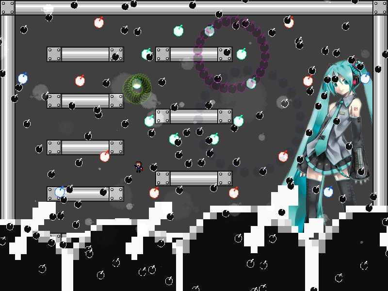
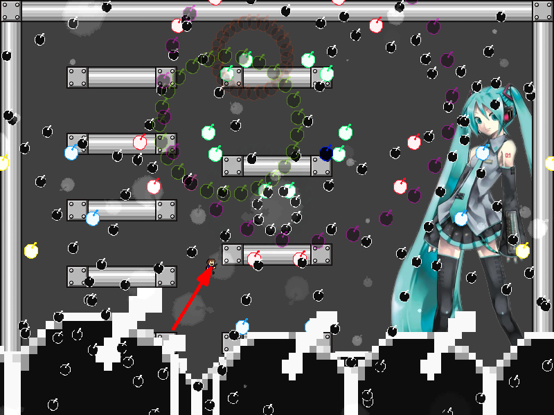
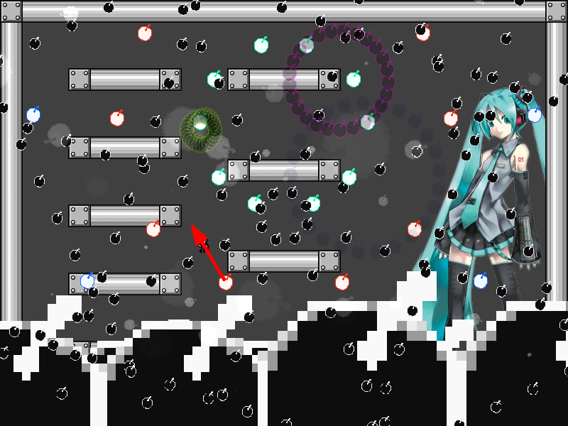
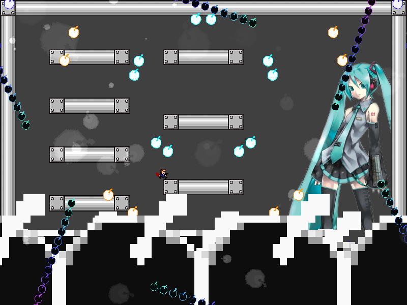

| creator | segment | label | jump |
|---|---|---|---|
| NN | 1:42.40~1:43.90 | P | double |
半径のみがランダムな弾幕です。
進行方向に対して反対向きに、かつ瞬間的に身を翻す動きを目的とした弾幕となっています。
8-1において画面中央を中心として生成される8方向に広がる放射状弾幕に関して、fig.8-2.1.aおよびfig.8-2.1.bに示すように最大ジャンプ2回と一時的な左入力を用いることで余裕をもって回避することができます。


なお、8-2終了時点で画面中央部に滞在している必要があります（fig.8-2.2）。

1回目のジャンプのタイミングと高度を固定化し、2回目のジャンプのタイミングおよび一連の動作における左右入力のタイミングと入力時間を変化させることによって、いかなる状況においても柔軟に対処することが可能になり攻略がしやすくなるかもしれません。